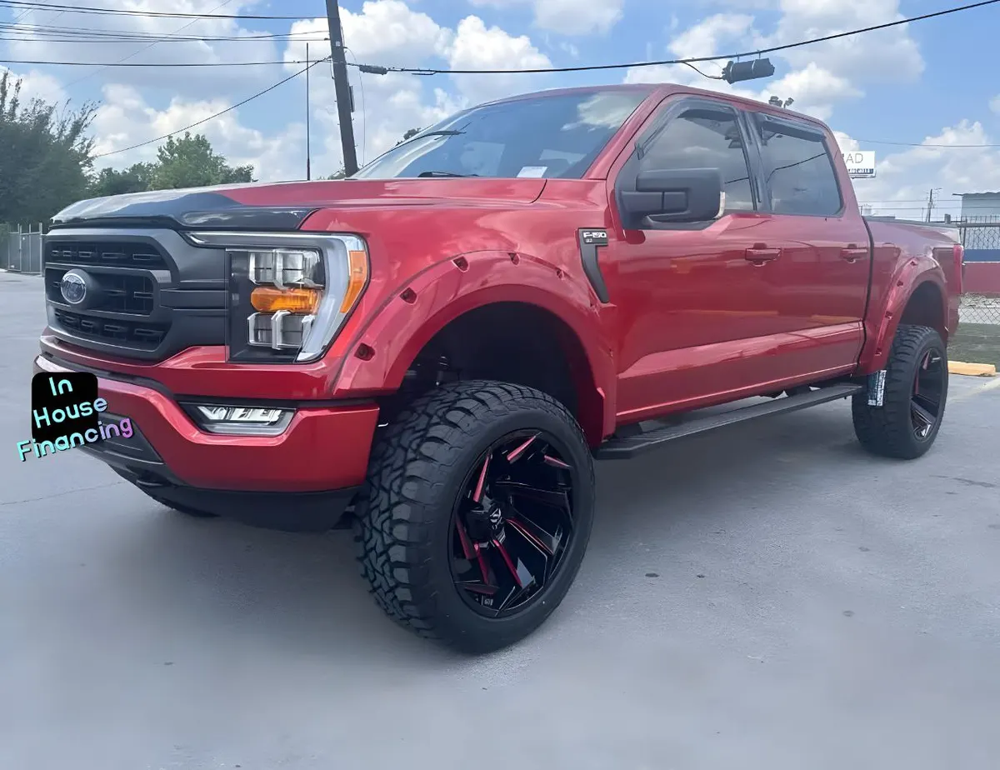

2023 Ford F-150 FX4
Vinotinto • ID CCH-431

1/4Datos generales
| Año | 2023 |
|---|---|
| Marca | Ford |
| Modelo | F-150 FX4 |
| Tipo | Troca |
| Color | Vinotinto |
| Millas | 24,000 millas |
| Asientos | Por confirmar |
| Tracción | 4x4 |
Se ve en las fotos / dato del nombre
- 4x4
- Elevada (lifted)
Ideal para
Para quien necesita una troca para trabajo y para el día a día.
Año, millas y características salen de los datos del inventario; confirma los datos exactos de esta unidad con el dealer. Esta ficha no muestra precios: el dealer los da por escrito.